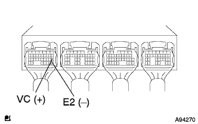
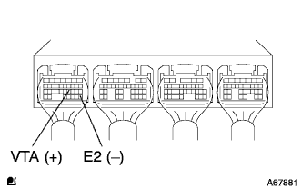
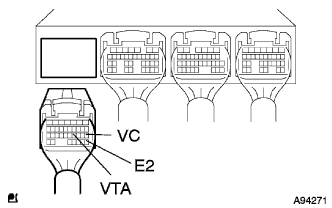
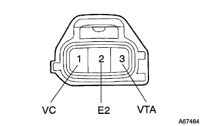

DTC P0120/41 throttle sensor system |
| DTC No. | DTC detection conditions
| Inspection site |
| P0120/41 |
|
|
| Step 1 | Tascan data reading (throttle (No.1) sensor opening) |
Turn on the ignition switch and read the throttle valve opening displayed on Tascan while stopping the engine.
| Throttle valve | Display |
| Fully open | About 75% |
| Fully closed | About 10% |
| Completely closed → fully open → fully closed | The number changes without interruption |
|
| ||||
| NG | |
| Step 2 | Engine Control Computer Single Inspection |
|  |
Turn on the ignition switch.
The voltage between the connector terminals of the engine control composer is measured using a Toyota Electrical Tester.(The terminal array isreference)
| Measurement terminal (terminal number) | Reference value |
| A18 (VC) ← → A28 (E2) | 4.5-5.5V |
|
| ||||
| OK | |
| Step 3 | Engine Control Company Single Inspection (E.F.I. Slotottle Posysille Sensor Voltage Voltage Inspection) |
Turn on the ignition switch.
|  |
Use a Toyota Electrical Tester to measure the voltage between the engine control compilation connector A21 (VTA) ← → A28 (E2).reference).
| Throttle valve | Voltage (V) |
| Fully closed | 0.3-1.0 |
| Fully open | 2.7-5.0 |
|
| ||||
| NG | |
| Step 4 | E.F.I. Slot Toru Posysillon Sensor Single Inspection |
reference)
|
| ||||
| OK | |
| Step 5 | Wire harness or connector inspection (engine control compilationa-E.F.I. Slotottle Posysijon Sensa) |
|  |
Cut the connector A and E.F.I. Slottle Posysisillon sensor of the engine control compilation.
|  |
Using Toyota Electrical Testers, the engine control computa ← → E.F.I. Inspect the conjunction and short circuit between the throttle posysillion sensor (terminal sequence is (terminal sequence)reference).
| Measurement terminal (terminal name) Engine Control Company ← → E.F.I. Throttle position sensor | standard |
| A18 (VC) ← → 1 (VC) | There is no conduction, there is no short circuit between other terminals and between body earth |
| A21 (VTA) ← → 3 (VTA) | There is no conduction, there is no short circuit between other terminals and between body earth |
| A28 (E2) ← → 2 (E2) | There is no conduction, there is no short circuit between other terminals and between body earth |
|
| ||||
| OK | ||
| ||